Cambria is a railroad town. It did not exist on the 1878 county atlas. Then the Chicago & Indianapolis Air Line — soon to be the Monon — came angling across Section 8 of Owen Township, and the Frankfort Weekly Crescent of 6 June 1883 reported:
They have already begun grading for the switch between Rossville and Frankfort, on the farms of Joseph and Abe Michael, near John and Charley Michael’s. The railroad officials have named the town Cabria [sic]. Town lots have been laid out and are for sale cheap. A station at or near this place is much needed as some of the people have from five to six miles to go for their mail.
Frankfort Weekly Crescent, 6 June 1883
By September “Aunt Carrie” was telling the paper’s readers that “there must be a little town started at the Cambrie station. They are already making preparations for a depot and warehouse. This is a beautiful site for a village.” A post office opened that same month with Enoch Bible as postmaster, and lasted until 1915.
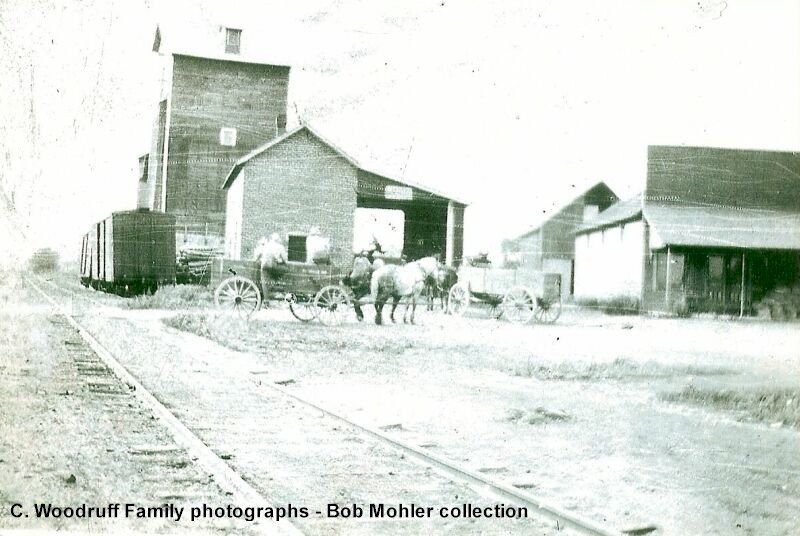
Watch it growSection 8, and the town lots
Ben redrew the old plats and atlas pages year by year. Drag the slider, or press play.
1816 – 1899Mahlon Sharp, from Alsace
Bessie Gum’s great-grandfather Mahlon Sharp was born in January 1816 in Alsace-Lorraine — French mother, German father — and left at nineteen, the family guessed, to stay out of the army. His granddaughters remembered what he told them:
Mahlon Sharp, my grandpa, was a cook on the ship to America. There was a storm during their voyage, and it took them twenty-nine days to get to America.
Laura Sharp Overman, 1978
He came west from Pennsylvania with a party of German families, married Elizabeth Krammes, and farmed a mile east of where Cambria would be, in a log house. Nobody is sure “Sharp” was even his name in the old country — a grandson remembered “something like Schraeffer.” His tombstone at St. Luke spells his first name wrong.
Grandpa was a farmer, raised sheep. I used to herd them along the road 2 hours of mornings. He raised hogs and was a bee man. Had bee hives, side by side from lane to garden with a roof over hives for shade. I remember once the bees settled all over him, he threw water on them.
Dora Sharp Hodson, 1971
1859 – 1937Charles K. Sharp: the elevator, the store, and the curve
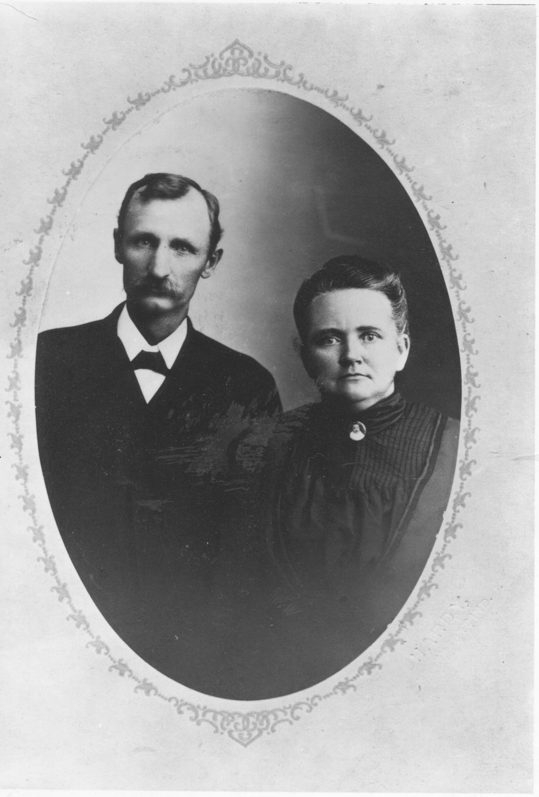
Mahlon and Elizabeth’s son Charles K. Sharp was born in that log house in April 1859. The family said he started school at nine speaking only German. His mother died of typhoid when he was sixteen — “he was always concerned about good drinking water” afterward, his daughter said. In 1880 he married Pleasy Bell Reavis, the youngest of Enoch Reavis’s enormous family. “Papa used to say, ‘Hi, Doll’ to Mamma when he came in for a meal. Also called her Bell.”
He dealt in cattle, hogs and sheep, and about 1899 he did what seven other farmers along the new railroad were doing: he built a grain elevator. It stood ninety feet high on the north side of the road, just east of the tracks, with stockyards behind it and coal sheds across the way. His father was against it. His future son-in-law Charles Gum kept the books.
The Monon Railroad was fairly new, and no elevators were built along the railroad track at Cambria. Father, like seven other farmers, decided to build a grain elevator. Father’s elevator was at Cambria. Charles Gum did the bookkeeping. We had our new home near Cambria, and Father walked home for the noon meal.
Laura Sharp Overman, 1978
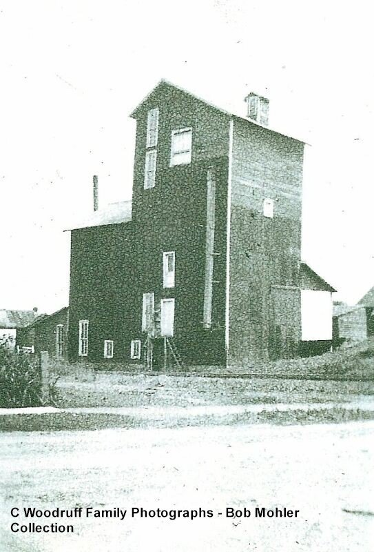
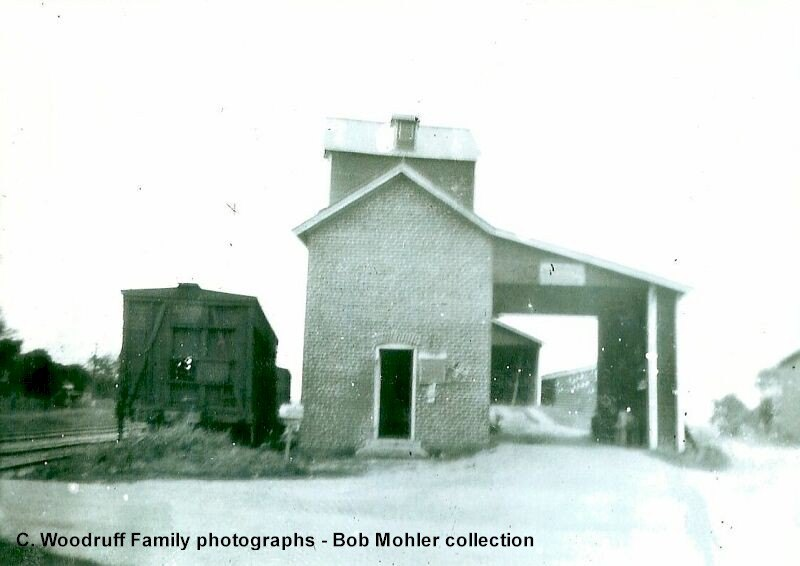
He also put up the general store next door, and built a new frame house a quarter-mile east of town. His wife said that house saw “a death, a marriage and a birth” in short order: old Mahlon died there in his sleep three days after Christmas 1899; daughter Clara married Charles Gum in the front room in April 1900; and the baby, Russell, was born that November.
And somewhere in there he served a term as road superintendent. His grandson Charles Dee Sharp wrote it down in one sentence in 1979, and solved a mystery Dad and Ben had wondered about for years:
At one time he was road superintendent and made a surveying error resulting in what became known as “Sharp’s curve” west of Cambria.Charles Dee Sharp, 1979
The elevator never paid. “The Cambria area was not a good place for a grain elevator,” Laura explained. “Farmers didn’t sell grain but fed it to the cattle.” In November 1903 Charles sold out and moved the family to McGrawsville in Miami County, where he built another one. Pleasy was killed in a railroad accident there in 1919. The Cambria elevator passed through several hands and burned in the early 1920s; the brick office survived as Burkhalter’s garage, and it is still standing by the tracks.
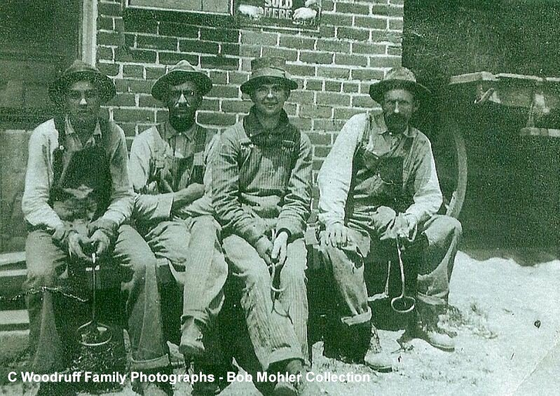
Enoch and Lucy Reavis
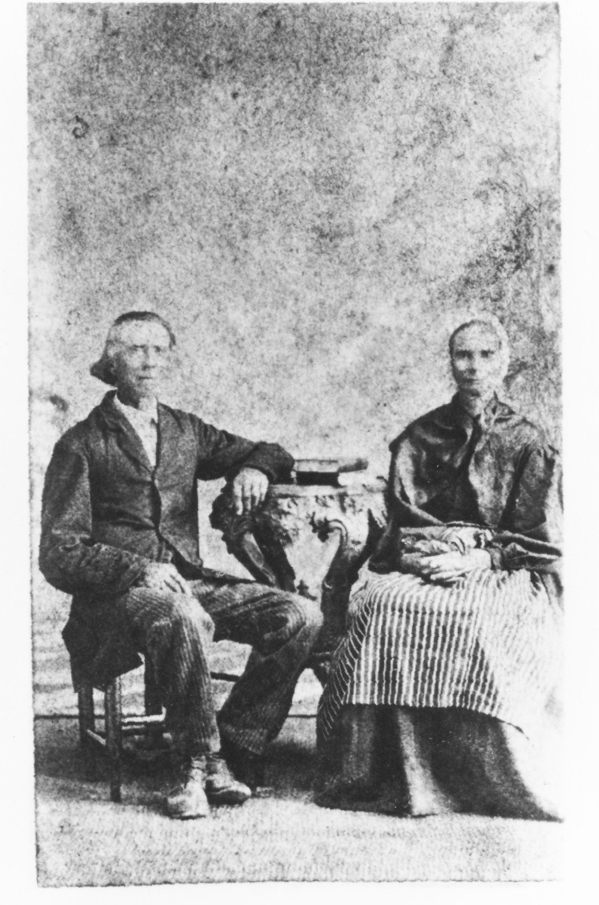
Pleasy’s father Enoch Reavis (1807–1898) came to Clinton County from North Carolina before 1848, a Baptist, a fierce temperance man and a fruit grower who could graft two kinds of apples onto one tree. (When a doctor prescribed whiskey for his throat: “No way!” — a daughter cured him with hot rabbit stew instead.) His people back in Carolina had owned slaves; he “talked fondly about ‘Old Sylvia,’ their house slave.” Widowed with children, he married Lucy Daniels Cripe (1818–1903), a widow with five of her own, and they had five or six more. Lucy was an identical twin, kept a house “neat as a pin,” made grand mince pies, and never laughed out loud — only smiled. Her grandfather Nehemiah Daniels was killed in the Revolution in 1778.
It was Enoch who turned up at the Sloan estate sale in 1854. And Aunt Laura says the two families’ farms once touched: “The Indiana farms of Bessie’s great grandfather and Ellis’ great grandfather joined. There was a Liberty School at the crossroad.”
1901 – 1970sGum’s Store
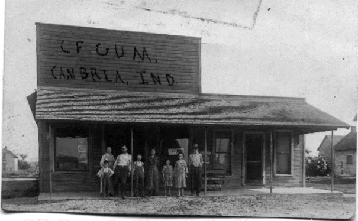
Charles Franklin Gum was born near Sedalia in 1873, went to the normal school at Danville, taught school near Rossville and at Cambria, and preached some at Battle Creek. In 1901 — a year married, with a baby — he bought the general store from a man named Rippert. “Clara hated to see him go into business,” her sister wrote, “but Charles said he would rather have the grocery store than an eighty acre farm.”
The store burned in 1904 and was rebuilt. It held the post office. It had a walk-in icebox in the east room, filled from the top every winter. Six days a week its huckster wagons — mules and a coal stove, until trucks came in about 1915 — went out on the country routes selling groceries and buying eggs, butter and dressed rabbits, which went to Frankfort on Wednesdays and Saturdays. Aunt Edith remembered it all in 1970:
Bread was shipped, unwrapped and not sliced, in big wooden boxes (by railroad). Crackers and cookies were shipped in big wooden barrels and boxes. Sugar was shipped in big wooden barrels (300 lbs. or more) and “sacked” as it was sold. Some large families bought only one pound at a time. Pickles, vinegar and sauerkraut were in large wooden barrels and customers brought their own containers.
Edith Gum Cheesman, “History of Cambria, Indiana,” 1970
Charles died in January 1926. Clara Bell Sharp Gum ran the store herself for twenty-three more years, until she died in 1949; then son Arthur until 1968; then Arthur’s widow Ruth. Four proprietors, one family, the better part of a century. It was on that porch that Ben waited for the school bus.
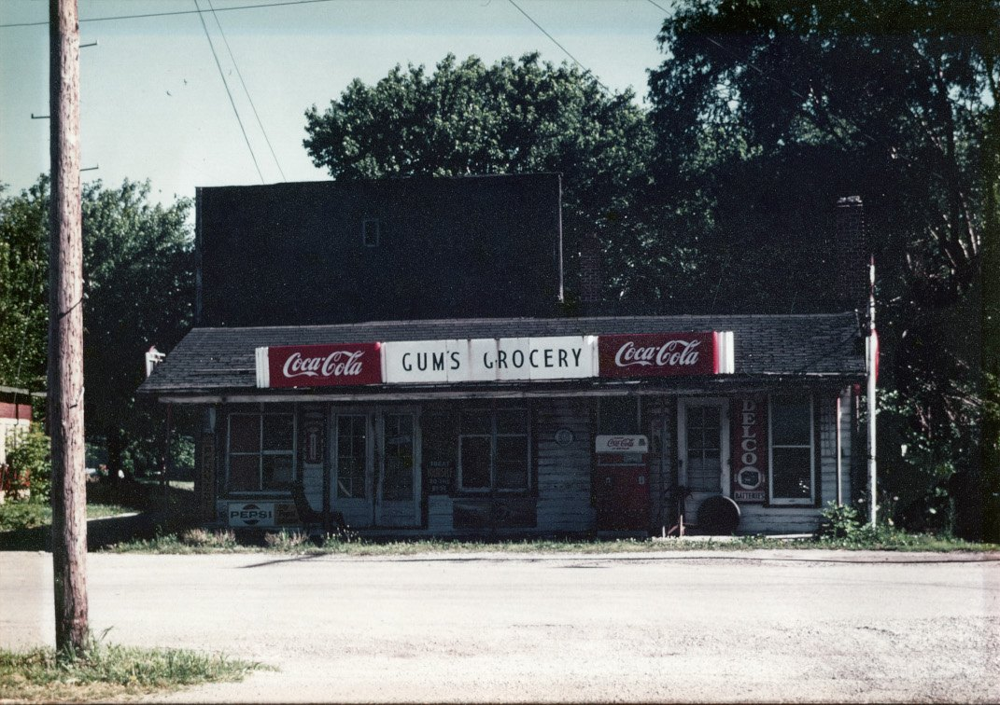
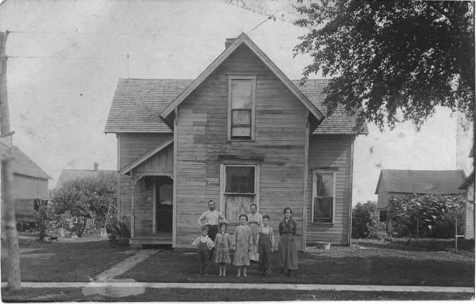
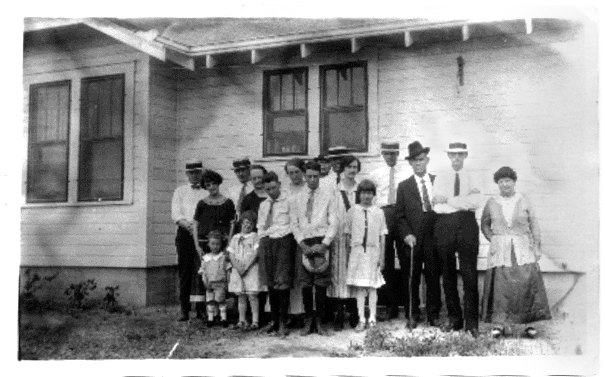
Bessie
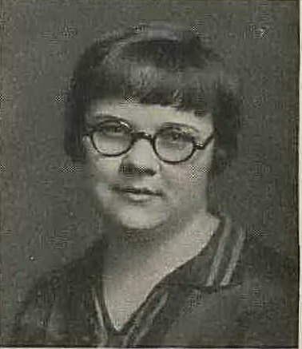
Charles and Clara had five children: Edith (1901), Floyd (1903), Bessie Bell (10 June 1905), Mary and Arthur. Great-aunt Laura remembered meeting the new baby at the Frankfort fair: “Charles held the new baby over our shoulders. She was wide awake and looked us over.”
Bessie graduated from Frankfort High School in 1923 — the yearbook tagged her “A Day of Sunshine” — and then did something few Clinton County girls did in the 1920s: she went to Bloomington and in 1928 took an A.B. in Mathematics from Indiana University. That same year she wrote out a genealogy of her family. On 10 December 1932, in Cambria, she married Ellis Sloan from down by Hamilton. Their story continues at the sawmill →
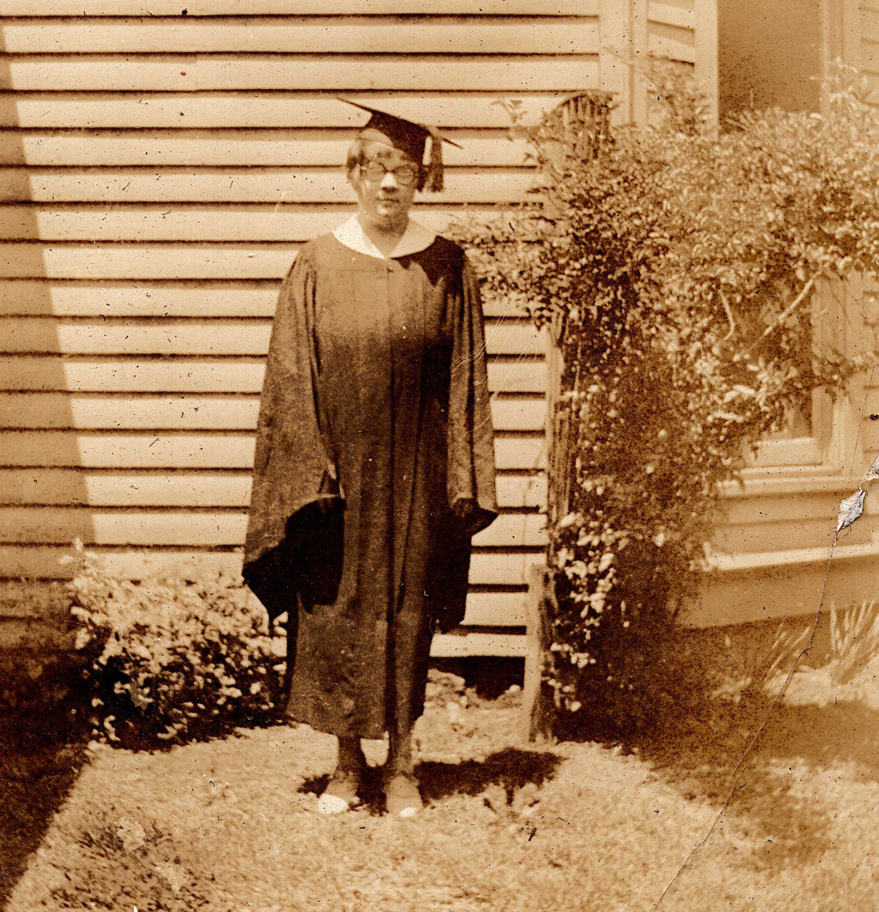
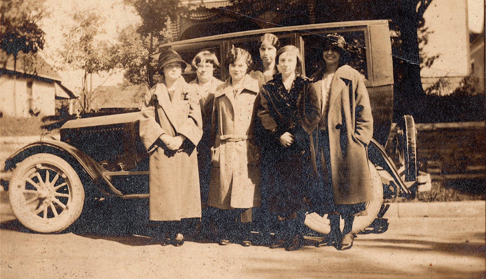
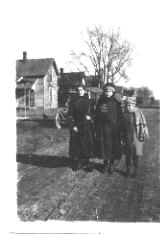
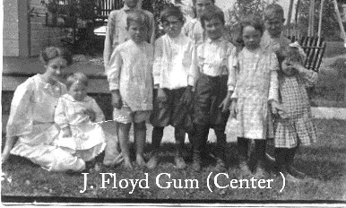
Aunt Edith remembersLife in town
At one time Cambria had 3 general stores, post office, barber shop, blacksmith shop, 3 churches as well as the elevator, stock yards, saw mills, cane sugar mills, 2 room school house with all eight grades, some lodges and social clubs and Justice of Peace (Squire Dan Sharp). Large amounts of maple syrup were made about 1 mile east of Cambria until 1937.
Edith Gum Cheesman, 1970
- The Monon. “Around 1914 to 1929 Monon had passenger trains going each way three times per day and several freight trains and they nearly all stopped in Cambria every day.” Section crews worked out of town on hand-cars. A passenger train derailed at Cambria in August 1903 when an axle broke; nobody was badly hurt.
- The first automobile. “In 1907, I saw the first automobile I ever saw, in Cambria. The D. I. Neher who owned some sawmills lived just west of Cambria, and he drove that automobile, which he called ‘Queen.’ … It was maroon color, open on each side in front and only one door in back and that door in the middle of the back. There was no top, no curtains, no windows.” (Daniel I. Neher was kin to Grandma Minnie, whose grandmother was a Neher.)
- The school. Two rooms, brick, built before 1898. After 1917 one teacher taught all eight grades in the west room and the east room was for basketball and rainy recesses. “The school’s shingle-roof caught on fire several times, but was always put out by a hand-brigade with buckets of water from the school’s hand pump.” Closed 1927, torn down 1932.
- Moving day. Buildings got moved around like checkers — the Brethren church in 1912, the Grange hall in 1911 — on logs, pulled by horses walking a treadmill set in a hole in the road.
- Picture shows. “On some nice evenings in summer, people came from miles around to see ‘magic lantern’ and free moving pictures on a large outdoor screen in Cambria. The moving pictures were moved by hand or crank.”
- Raising cane. “Lot of farmers really raised cane around Cambria 1915–1917 and about 1936–1938. … Boys liked to cut off pieces of cane and chew them.”
- Electricity came to the first buildings in 1925 — Russell and Mabel Michael brought the first electric lights to town for their wedding in the front room of their house — and to most houses by 1948. Kip and Deanna moved into “the old Michael place” in 1981.
- The Cambria Detective Company, a horse-thief association, was incorporated in January 1908 and had been meeting since at least 1896. Eldo Hackard, a Reavis cousin, was one of its secretaries.
- The Old Fiddlers’ Contest of January 1901 made the Delphi paper when the Frankfort champion “sat glued to his chair for two solid hours” while the judges kept calling back the Carroll County man, and walked home in a fury.
- Football. In November 1902 Cambria played Young America at the Flora fairgrounds “for $50 aside and the gate receipts,” reinforced by ringers from the Frankfort Tigers.
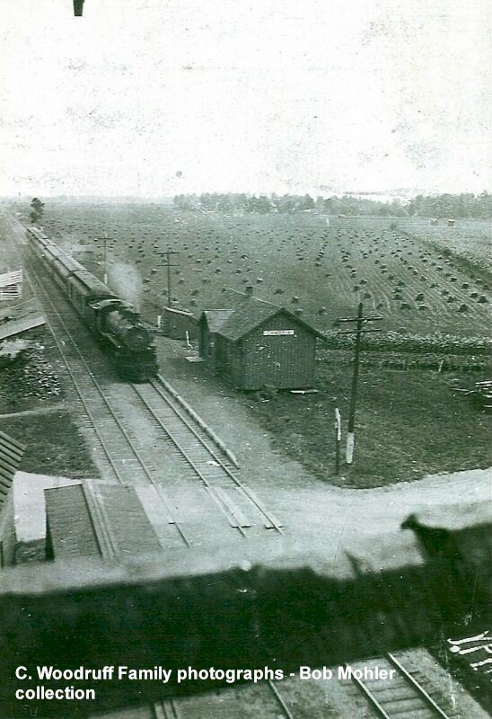
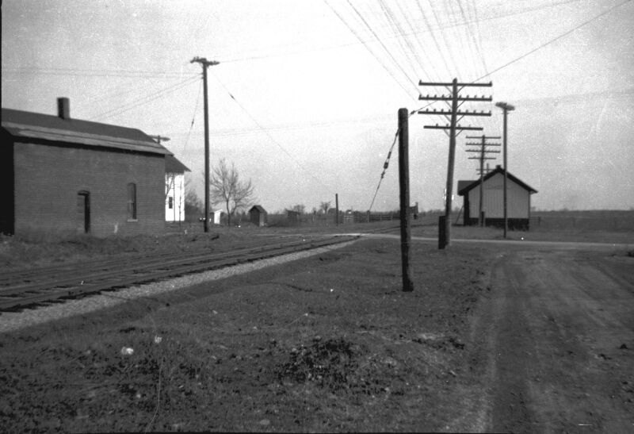
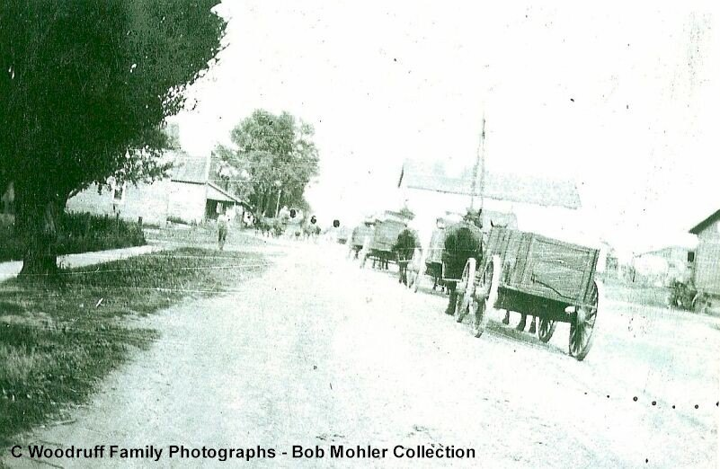
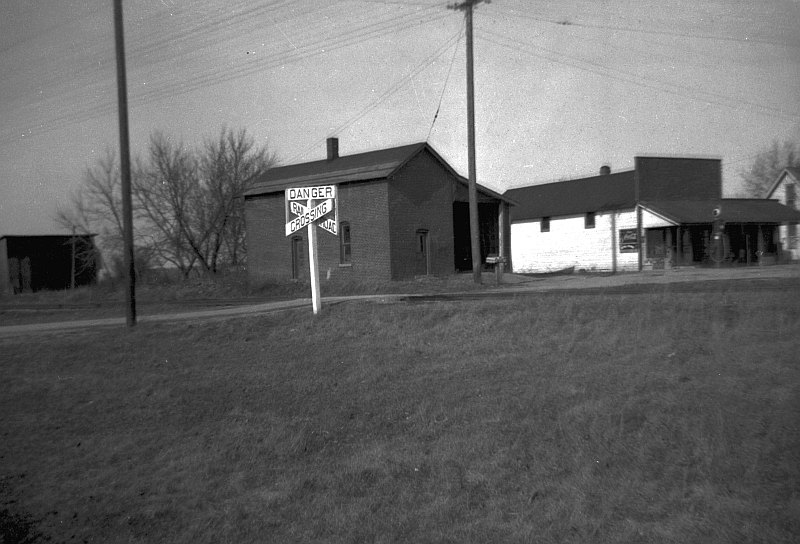
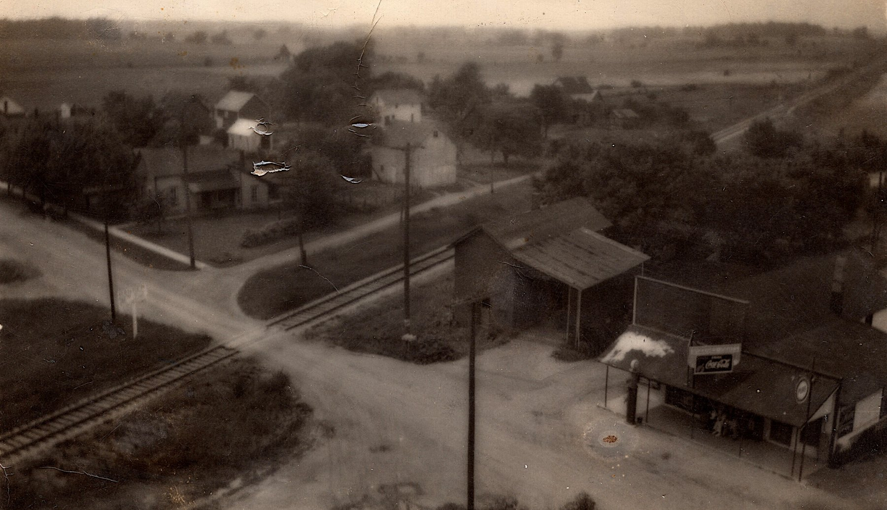
Four doors downMom’s family comes to Cambria
About 1971 a truck driver from the North Carolina mountains and a nurse from Logansport bought a small house in Cambria. “We were moving in and Joni Miller came over and brought me a candy bar. Hershey’s I believe,” Grandma Delores remembered. “I thought it was a friendly little town.” Their daughter Deanna married the Sloan boy in 1978. Mom’s side →
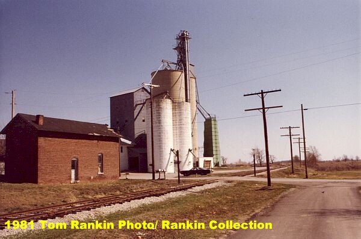